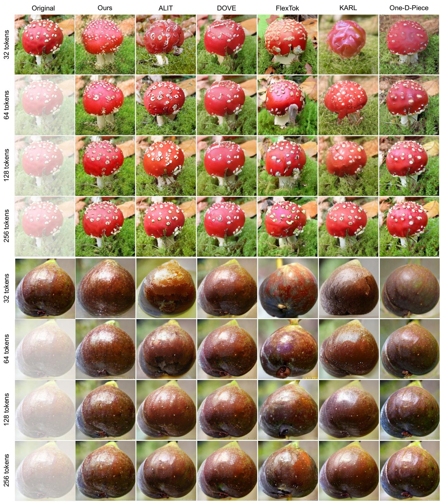

Figureure 1 · Quality-efficiency comparisonFigure 1. Quality-efficiency comparison. Reconstruction fidelity (rFID), decoding throughput, and model size across recent tokenizers. Our method achieves state-of-the-art rFID while being the smallest and among the fastest decoders.这张图/表用于判断 ChannelTok 的实验收益来自哪里。重点看替换、消融或跨模型设置下趋势是否一致，而不是只看单个最高分。

Figureure 15 · Qualitative comparison on images with varied texturesFigure 15. Qualitative comparison on images with varied textures. Top: A red mushroom with white spots against a mossy background, where our method preserves fine surface detail and color fidelity even at low token budgets. Bottom: A dark round fruit, where competing methods introduce color artifacts and lose surface sheen at low tokens, while ours maintains perceptual consistency across all budgets.这张图/表用于判断 ChannelTok 的实验收益来自哪里。重点看替换、消融或跨模型设置下趋势是否一致，而不是只看单个最高分。